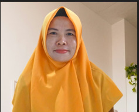

Guru Mata Pelajaran Informatika
IRMA RACHMAWATI, S.Kom.
Kategori: SMP/MTs Kelas IX - Akselerasi Transformasi Pendidikan di Era AI
Pilih Kurikulum Informatika Kelas IX
Assesmen Diagnosis Gaya Belajar Berbasis AI
Pilih kebiasaan belajar Anda untuk memungkinkan engine AI menyesuaikan materi Informatika secara presisi:
Model AI Aktif: Mode Informatika Adaptif (Kelas IX)
Visual